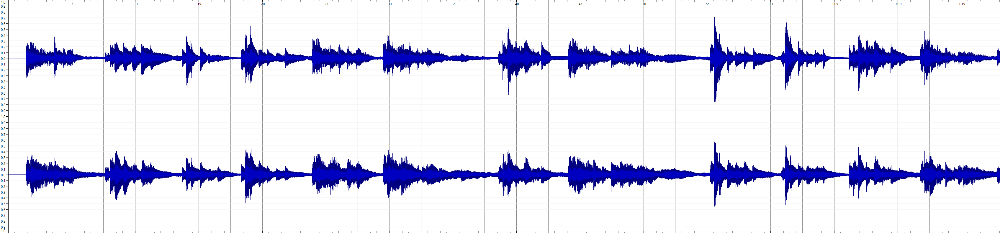
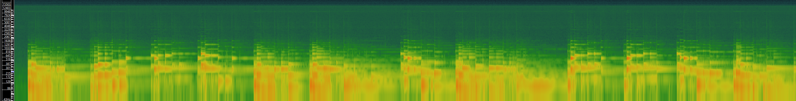
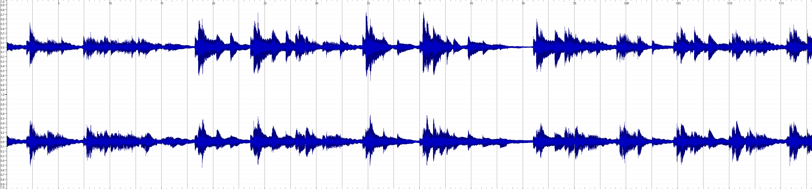
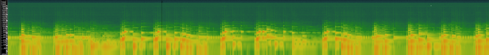
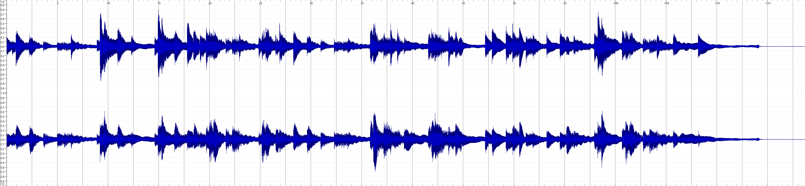

As I only have one track, I split it into three equal pieces
Track 1 - Ludovico Einaudi from 0:00 to 1:18
Track 2 - Ludovico Einaudi from 1:18 to 2:37
Track 3 - Ludovico Einaudi from 2:37 to 3:55
Because essentially I have one track (even tho it is split into 3) I believe that medatada for them is going to be the same
Title - Underwater
Artist - Ludovico Einaudi
Composer - Ludovico Einaudi
Copyright info (if any) - © Ludovico Einaudi
Genre - Classical
Source - youtube link
File/audio format - MP3
Number of channels - 2 (Stereo)
Sample rate - 44.1kHz
Bits per second - 136
Duration - 3:55 (full song); ~1:18(each of three pieces)
Waveform:
Spectrogram:
Waveform:
Spectrogram:
Waveform:
Spectrogram:
Time-frequency analysis is more beneficial than waveform-based analysis for understanding musical data because it reveals how different frequencies in a sound change over time. Unlike waveforms that mix everything together, time-frequency analysis breaks down a sound into its frequency parts across different time intervals. This is helpful for understanding musical signals that change, such as varying pitches or dynamic patterns. Visual outputs of this analysis, like spectrograms, show when events happen in a musical piece and how its frequencies shift over time. In music processing, time-frequency analysis is valuable for capturing details that might be missed when just looking at the overall sound at once.
Waveform analysis does not provide a good representation of the frequency changes over time. If we look at Track 1, the spectrogram offers a much more accurate picture of how the frequencies variations.